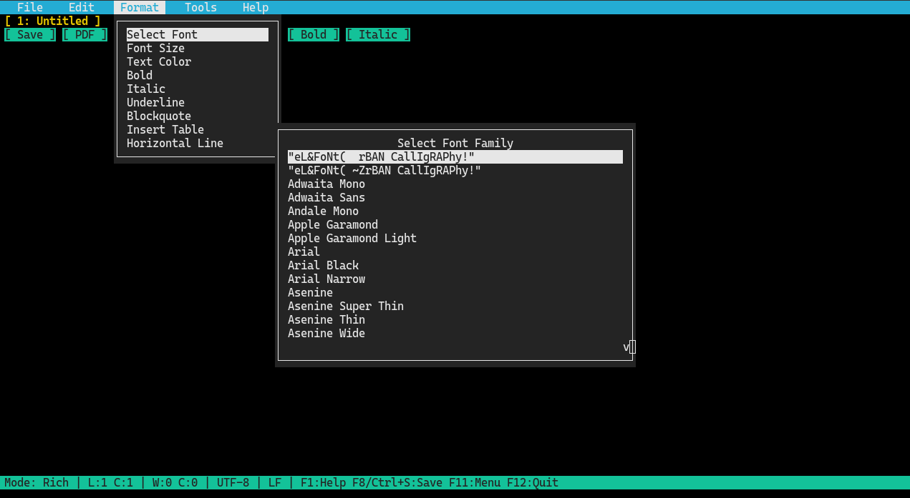

The diet soda of word processors, same refreshing taste, half the calories!
Version 2.7, released on October 28th, 2026
A lightweight, distraction-free rich text editor and code notepad built with C++ and Qt. MicroWriter combines the simplicity of a classic notepad with essential word processing tools, multi-tab editing, and versatile document export capabilities.

|
Shortcut |
Action |
|
Ctrl + N |
New tab / document |
|
Ctrl + O |
Open file |
|
Ctrl + S |
Save current file |
|
Ctrl + Shift + S |
Save As |
|
Ctrl + W |
Close active tab |
|
Ctrl + P |
Print document |
|
Ctrl + Q |
Exit MicroWriter |
|
Shortcut |
Action |
|
Ctrl + Z |
Undo |
|
Ctrl + Y / Ctrl + Shift + Z |
Redo |
|
Ctrl + X |
Cut |
|
Ctrl + C |
Copy |
|
Ctrl + V |
Paste |
|
Ctrl + A |
Select all text |
|
Ctrl + F |
Find and Replace |
|
Alt + Q |
Next Tab |
|
Shortcut |
Action |
|
Ctrl + 1 |
Normal Layout |
|
Ctrl + 2 |
Web Layout |
|
Ctrl + 3 |
Print Layout |
|
Ctrl + 4 |
Code Layout |
|
Shortcut |
Action |
|
Ctrl + B |
Bold |
|
Ctrl + I |
Italic |
|
Ctrl + U |
Underline |
|
Ctrl + Shift + X |
Strikethrough |
|
Ctrl + L |
Align Left |
|
Ctrl + E |
Align Center |
|
Ctrl + R |
Align Right |
|
Ctrl + J |
Justify |
|
Shortcut |
Action |
|
F1 |
Help & About Dialog |
|
F2 |
New Tab / Document |
|
F3 |
Cycle Through Tabs |
|
F4 |
Find & Replace (Regex / Plain Text) |
|
F5 |
Switch to Rich Text Layout |
|
F6 |
Switch to Code Layout |
|
F7 |
Open File Dialog |
|
F8 |
Save Current File |
|
F9 |
Aspell Spelling Correction Dialog |
|
F10 |
Export Document as ODF |
|
F11 |
Activate Dropdown Menu Bar |
|
F12 |
Quit / Exit MicroWriter |
|
Shortcut |
Action |
|
Ctrl + S |
Save Current File (Flashes Save indicator) |
|
Ctrl + Q |
Quit / Exit MicroWriter (Checks for unsaved changes) |
|
Ctrl + F |
Find/Replace |
|
Ctrl + O |
Open File |
|
Shortcut |
Action |
|
Ctrl + X |
Cut Selection / Line (Syncs to system clipboard) |
|
Ctrl + C |
Copy Selection / Line (Syncs to system clipboard) |
|
Ctrl + V |
Paste (Reads from system clipboard: wl-paste / xclip) |
|
Ctrl + D |
Nano-style Cut Entire Line |
|
Ctrl + A |
Select All Text |
|
Ctrl + E / Ctrl + Z |
Undo |
|
Ctrl + R |
Redo |
|
Tab |
Indent 4 Spaces / Block Indent Selection |
|
Shift + Tab (Backtab) |
Unindent Line / Selection |
|
Shortcut |
Action |
|
Arrows |
Navigate cursor |
|
PgUp / PgDn |
Scroll page up / down |
|
Home / End |
Jump to line start / end |
|
Esc |
Cancel active prompt, cheat sheet, or menu |
|
Mouse Event |
Target |
Action |
|
Click |
Menu Bar (Row 0) |
Open dropdown menus |
|
Click |
Tab Bar (Row 1) |
Switch active tab |
|
Double-Click |
Tab Bar (Row 1) |
Create new tab |
|
Right-Click |
Tab (Row 1) |
Tab Context Menu (Save, Close, Save & Close) |
|
Click |
Toolbar (Row 2) |
Quick actions (Save, PDF, Open, Formatting, Comments) |
|
Click / Drag |
Content Area |
Position cursor or create text selection |
|
Click |
Gutter (Code Mode) |
Select entire line |
|
Mouse Wheel |
Editor / Dialogs |
Scroll document viewport or modal lists smoothly |
mkdir build && cd build
cmake ..
cmake --build .
# Launch directly into the console TUI or force code editing mode:
microwriter -c [file1] [file2] ...
microwriter --console [file1] [file2] ...
# Launch directly in Code Layout mode
microwriter -C [file1] [file2] ...
microwriter --code [file1] [file2] ...